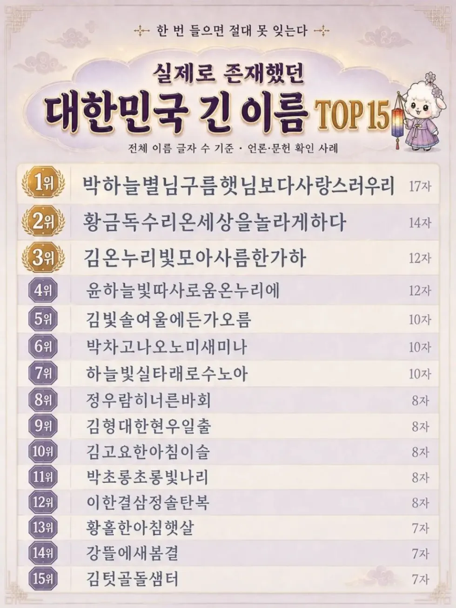

https://humoruniv.com/pds1424218

https://humoruniv.com/pds1424218

분명히 아헤가오를 봤는데
저기 있는 이름들은 모르겠는데, 출생신고 하기도 전에 아기가 사망하면 사망신고를 해야하는데, 출생신고가 먼저 되어있어야 사망신고를 할수있음. 그래서 태명으로 출생신고를 하고 사망신고를 하기도 함.
황금독수리는 tv에 나왔어서 유명하니 알았었는데 1위가 바꼈네??
부모가 싸이코라고 본다
황독이는 머리 똘똘했는지 수학경시대회 같은거 나갈때 가끔 봄
진핑핑이엄마는도대체어떤쒸발년일까
9위 저분은 돌아가셨다는 소식을 봤음 이름이 특이하니까 기억나네..
박하늘별님구름햇님 보다사랑스러우리야
이름이 너무 갈다 그냥 박우리로 부를게
한글학자 배우리 씨가 쓴 책 '우리말 고운 말 고운이름 한글이름'에는 10글자 내외의 다양한 한글 이름이 수록돼 있다.
예컨대 '정우람히너른바회', '박차고나오노미새미나', '황금독수리온세상을놀라게하다', '윤하늘빛따사로움온누리에' 등이 있다.
특히 김텃골돌샘터 씨의 가족 이름이 흥미롭다. 김씨의 아내 이름은 '강뜰에새봄결'이고, 아들은 '김빛솔여울에든가오름', 딸은 '김온누리빛모아사름한가하'이다.